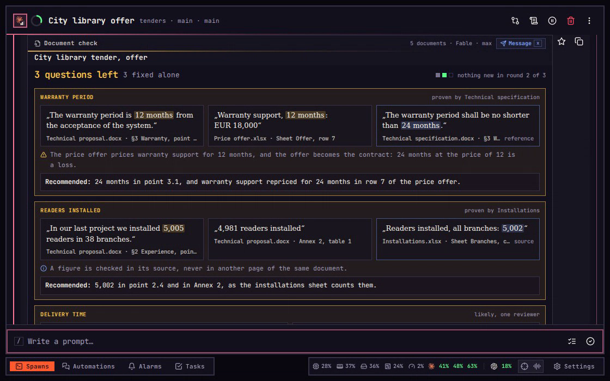
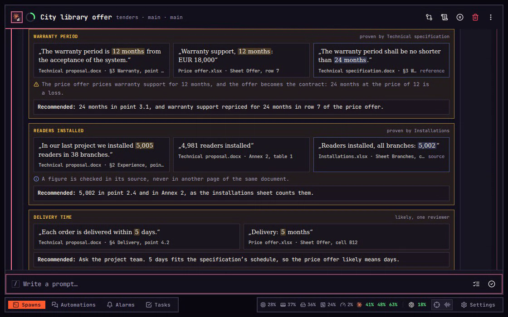
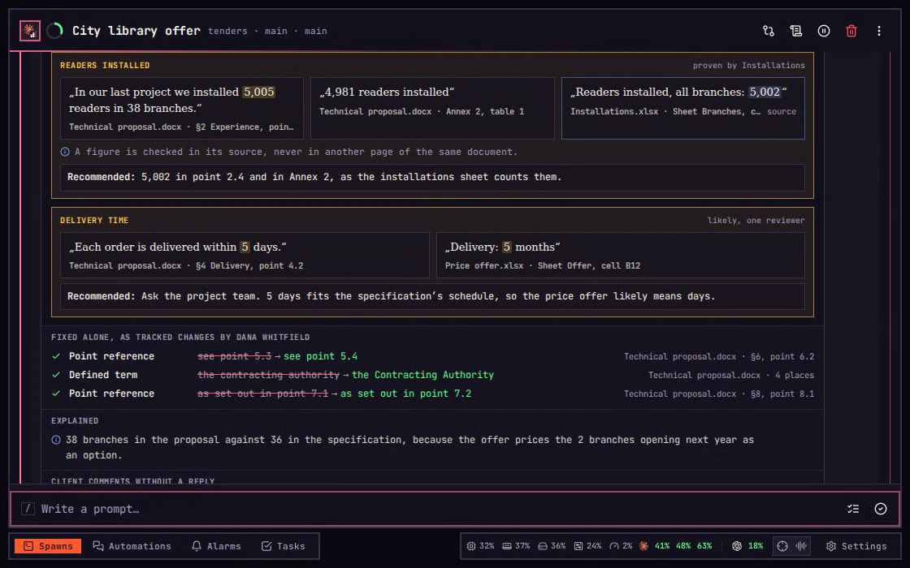
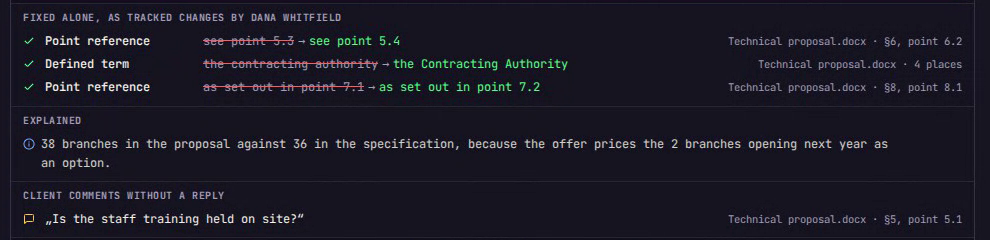
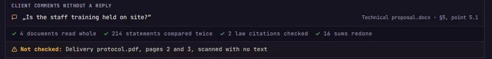

Document check
Find where a set of documents contradicts itself before it goes out.
Several agents and people write one offer at once, each on their own part. The proposal promises 12 months of warranty while the specification demands 24, and nobody reads both pages side by side. /rd reads every document, compares every statement twice, fixes only mechanical slips, and asks about everything else with one recommended answer.
On a phone, each key on this page is a tap.
01Price
The trap
“Run it again until it comes back clean.”
Escalation of commitment. Each run that finds something feels like a reason for one more, with no end and no price in sight.
A price before it starts.
Type /rd in a spawn working in the documents' folder: against names the document the others must agree with, and source the sheet the figures come from. Before any reviewer starts, the agent says how many reviewers, how many rounds, which model and what share of this login's five-hour room the run takes, then waits. Yes starts it. The run stops when a whole round finds nothing new, or at the round limit, three unless Settings say otherwise.
02Reference
The trap
“Two documents say 12 months, so 12 is right.”
Bandwagon effect. What most pages say starts to look true, even when the one page that decides it says otherwise.
One document decides.
A reference document is the one every other must agree with, such as a tender's technical specification. Name it after against for one run, or for every run on Settings › Document check under Reference documents. With no reference named, the run only plans: it reads and compares everything and changes nothing. The same page sets the reviewer, how many readers, hunters and checkers a round deals out, the round limit, whether slips are fixed alone and the name they are signed with, the card's language, the law sources and what to look for.
03Verdict
The trap
“The agent says it is done, so the documents agree.”
Automation bias. A confident summary from a machine is taken for the result, unchecked.
The ending comes first.
The run ends on a Document check card, and its first line is the ending in its colour: Clean in green, 3 questions left in amber, Not passed in red. Beside it stand 3 fixed alone and a dot per round: grey for a round that fixed something, green for one that found nothing new. imba prints every figure on the card from its own record of the run, and the agent writes none of it.

04Knock-on
The trap
“Change 12 to 24 and send it.”
Narrow framing. A fix is judged by the one line it changes, not by what that line sets off elsewhere.
Every answer says what it sets off.
Each question stands in its own box: the statements that cannot both be true, each with its document, section and point, and last the document that decides it, its words lit. On a laptop they stand side by side; on a phone one under another, with or and and between them. Under them, the warning sign says what the answer sets off: the price offer prices warranty support for 12 months. Recommended gives the one answer that weighs it: 24 months, and support repriced.

05Source
The trap
“4,981 must be the typo.”
Anchoring. The first figure read becomes the right one, and the other the mistake.
A figure is checked in its source.
Readers installed: the proposal says 5,005 in point 2.4 and 4,981 in Annex 2. Neither page can settle the other, so the check reads the installations sheet named as the source, which says 5,002, and recommends 5,002 in both places. The words at the top right of each box say how sure it is: proven when a reference, a source or a redone sum shows it, sure when both reviewers found it, likely when one did. A likely find, such as the delivery time below it, is always a question and never fixed.

06Alone
The trap
“It found the mistakes, so let it fix them all.”
Automation complacency. Once a tool proves useful, its changes stop being looked at.
Only slips are fixed alone.
Only mechanical slips are fixed without asking: a point reference left behind by renumbering, a defined term written small, a Latin letter inside a Cyrillic word, and an answer you gave carried to its other places. They stand under Fixed alone, as tracked changes by Dana Whitfield, the author set on Settings, so Word shows each one for review. Every figure, date, sum, warranty, scope or duty is a question instead. imba reads a file again before it writes, and writes nothing if the file changed since. Explained says why a difference is no fault, and Client comments without a reply lists each Word comment nobody answered.

07Unread
The trap
“Clean means every page was read.”
What you see is all there is. The pages on the card feel like all of them, and the ones nobody could read are out of sight.
What was not checked is always said.
The card's foot counts what was done: 4 documents read whole, 214 statements compared twice, 2 law citations checked, 16 sums redone. The last line always says what was not checked, here pages 2 and 3 of the delivery protocol, scans with no text. A Clean card carries that line too, and reads Not checked: nothing only when nothing was left out.

08Message
The trap
“I'll tell the owner later.”
Present bias. The note that would stop the offer going out wrong is put off for something more pressing.
One press writes the note.
Message on the card, or x on a laptop, asks the agent for a short note to the documents' owner from the newest check. The agent shows who it goes to and the exact words, and sends it by Slack only after your yes. Nothing is sent from the card itself.
x The note
Eight traps
Your mind slips. The check catches it.
- 01 Price
“Run it again.”Escalation of commitmentA price and a round limit - 02 Reference
“Most say 12, so 12 is right.”Bandwagon effectA reference document decides - 03 Verdict
“It says it is done.”Automation biasThe ending first - 04 Knock-on
“Change 12 to 24 and send it.”Narrow framingWhat the answer sets off - 05 Source
“4,981 must be the typo.”AnchoringThe source settles a figure - 06 Alone
“Let it fix them all.”Automation complacencySlips alone, the rest asked - 07 Unread
“Every page was read.”What you see is all there isThe pages nobody read - 08 Message
“I'll tell the owner later.”Present biasThe note, sent on a yesx
Every law a document cites is fetched from the law sources and checked, and /rd also takes code and a repository to check what the documents promise against the code, batch to check each generated document against its row in a sheet, rounds and a number, and plan to change nothing.
Every word and button
Each press, and its key.
The round above uses a few of them. Here is all of the Document check: the words typed after /rd, the card's button and the Settings page. Keys need a keyboard; on a phone or tablet the buttons are taps.
Typed after /rd
Words after /rd change that one run, in any order.
- against and a fileNames a reference document the others must agree with.
- source and a fileNames a source of figures, such as a database export or a signed protocol.
- code and a repositoryAlso checks what the documents promise against that repository's code.
- batch, a folder, from and a fileChecks each generated document in the folder against its row in the sheet.
- rounds and a numberSets this run's round limit, from 1 to 20.
- planReads and compares everything, and changes nothing.
On the card
- MessagexAsks the agent for a note to the documents' owner, which it sends only after your yes.
On Settings › Document check
Each choice saves on the press.
- ReviewerClaude or Codex, its model and its effort.
- AccountThe login the reviewers run on: the best seat, the host, or one by name.
- Readers, Hunters, CheckersHow many of each a round deals out: readers list the statements, hunters compare them, checkers test them against the references, sources and laws.
- Round limitThe most rounds a run takes, 3 to start with.
- Mechanical fixesWhether slips are fixed alone, or every find is asked.
- Author of changesThe name every tracked change is signed with.
- Card languageEnglish or Bulgarian; a Bulgarian card that fails reads НЕ е минало.
- Reference documentsThe names every run checks against, in order. Add puts one in; the cross takes one out.
- Law sourcesWhere a cited law's current text is fetched from: lex.bg and eur-lex.europa.eu to start with.
- Look forFigures, Dates, Duties, Scope, Names, Logic, Units, References, Language and Laws, each switched on or off.
Recorded in imba. Every spawn, repository and person in these films is made up.